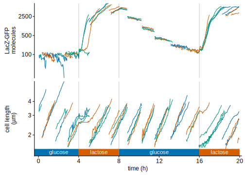
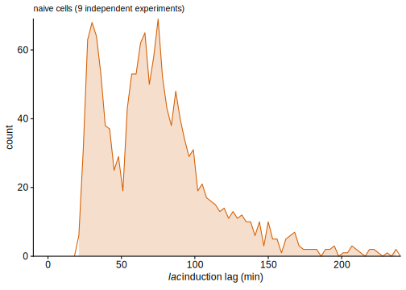
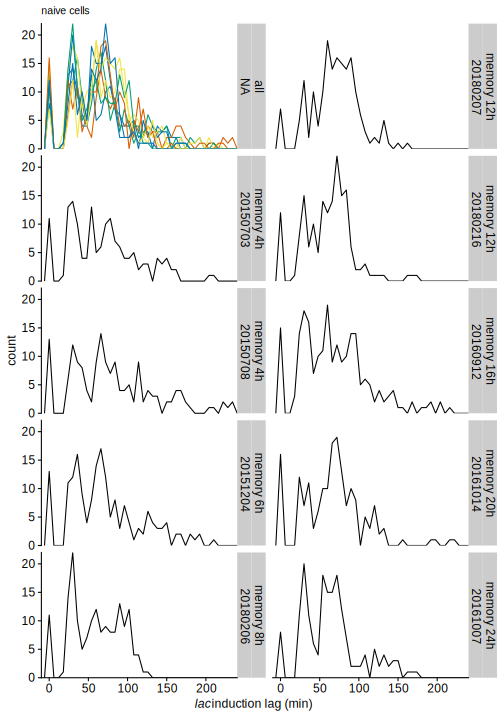
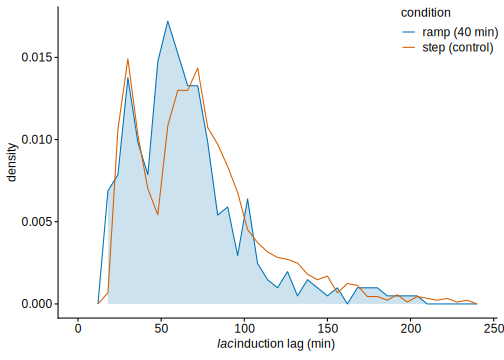
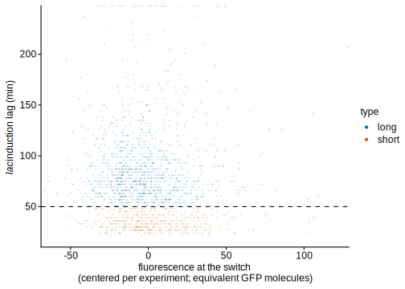
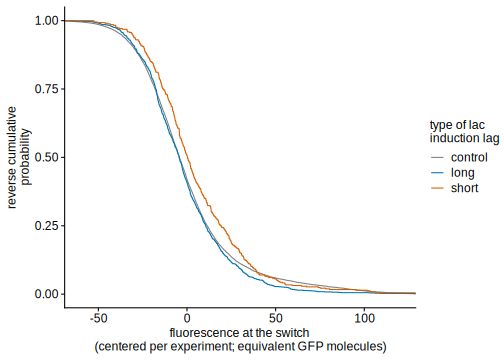
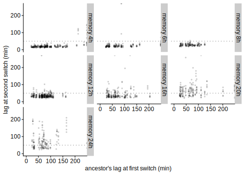
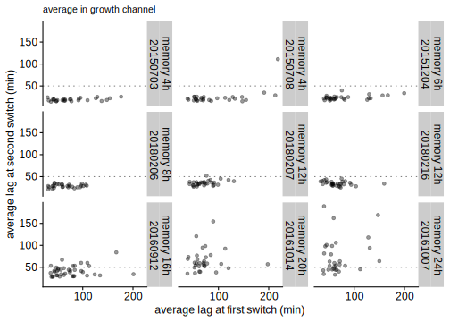
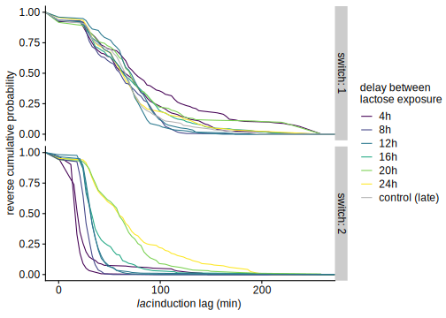
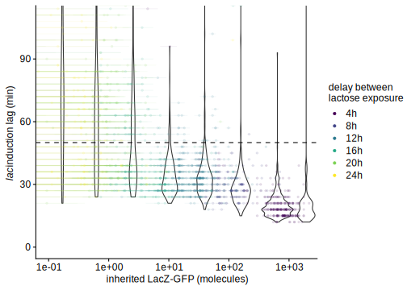

Induction lags of the native lac operon
Thomas Julou
11 October, 2020
From mother machine experiments, we obtain time series of cell length (used as a proxy for biomass) and LacZ-GFP. Here is an example obtained in a given growth channel.
# gfp_nb offset ≈ 100 to avoid stripping values and to keep background fluctuations visually small xxx
(myplots[['raw_traces']] <- function(.ylabel=1.3)
myframes %>% ungroup() %>%
filter(date==20180206) %>%
group_by(date, pos, gl) %>%
ggCustomTJ::slice_groups(c(1)) %>%
filter(!discard_start, !discard_top,
time_sec>2*3600) %>%
filter(total_cell_in_lane-cell_num_in_lane<5,
end_type %in% c('div', 'lost')) %>%
# ungroup() %>% mutate(gfp_nb=gfp_nb - 2*min(gfp_nb)) %>%
ungroup() %>% mutate(gfp_nb=gfp_nb + 135) %>%
gather(variable, value, length_um, gfp_nb) %>%
ggplot() +
# facet_grid(pos+gl~.) +
facet_wrap(~variable, scales='free_y', ncol=1, strip.position='left',
labeller=as_labeller(function(.str) {
.str <- str_replace(.str, "gfp_nb", "LacZ-GFP\nmolecules")
.str <- str_replace(.str, "length_um", "cell length \n(µm)")
return(.str)
}) ) +
geom_line(aes(time_sec-2*3600, value, col=ugen)) +
scale_colour_periodic(.n=3, guide='none') +
# show medium bar
geom_vline(aes(xintercept=m_start - 2*3600, group=1), alpha=.2, size=.5,
data=condition_acq_times %>% group_by(condition, medium, m_cycle) %>% slice(1) %>%
filter(condition=='switch_08h', m_cycle<=2)) +
geom_rect(aes(xmin=m_start - 2*3600, xmax=m_end - 2*3600, ymin=.ylabel, ymax=1.5, fill=medium, group=1), show.legend=FALSE, #size=0.2,
data=condition_acq_times %>% group_by(condition, medium, m_cycle) %>% slice(1) %>%
filter(condition=='switch_08h', m_cycle<=2) %>% mutate(variable='length_um')) +
geom_text(aes(x=m_start+(m_end-m_start)/2 - 2*3600, y=.ylabel, label=medium, group=1), size=4, col='white', hjust=0.5, vjust=-0.5,
data=condition_acq_times %>% group_by(condition, medium, m_cycle) %>% slice(1) %>%
filter(condition=='switch_08h') %>% mutate(variable='length_um', m_start=ifelse(m_start<2*3600, 2*3600, m_start))) +
# scale_fill_manual(values=c('glucose'=.fill[1], 'lactose'=.fill[2]), guide='none') +
coord_cartesian(xlim=c(-3600*.4, 20.2*3600), expand=FALSE) +
scale_x_hours(4) +
scale_y_continuous(trans='log10', breaks=c(2, 3, 4, 100, 500, 2500)) +
theme(strip.placement='outside', strip.background.y=element_blank(),
axis.title.y=element_blank()) +
NULL
)()
lac induction lags in naive cells
We are interested in the time taken by cells to induce the lac operon when exposed to lactose as the only nutrient. This “lac induction lag” is estimated from the LacZ-GFP time series of each cell after the switch. Note that at the first switch, all experiments with variable duration in glucose before the second switch are equivalent and are used together to plot the distribution of lags in “naive” cells (which have not seen lactose before).
(myplots[['naive_lags_hist']] <- mycells_switching %>% ungroup() %>%
filter(!date %in% discarded_dates) %>%
filter(!discard_arrested) %>%
filter(str_detect(condition, '^switch_[0-9]+h$')) %>%
filter(switch_idx==1) %>%
# mutate(lag=ifelse(lag<240*60, lag, 245*60),
# lag=ifelse(is.na(lag), -10, lag)) %>%
ggplot(aes(x=lag_200/60)) +
geom_density(stat='bin', fill=qual_cols[2], col='transparent', alpha=.2, binwidth=3) +
geom_freqpoly(col=qual_cols[2], binwidth=3, show.legend=FALSE) +
labs(x=lac_lags_label) +
coord_cartesian(xlim=c(-10, 240), expand=FALSE) +
NULL
) +
labs(subtitle='naive cells (9 independent experiments)')
mycells_switching %>% ungroup() %>%
filter(!date %in% discarded_dates) %>%
filter(!discard_arrested) %>%
filter(str_detect(condition, '^switch_[0-9]+h$')) %>%
filter(switch_idx==1) %>%
mutate(
lag_type=lag_200,
lag_type=as.character(lag_type), lag_type=ifelse(is.na(lag_type), 'NA', lag_type),
lag_type=ifelse(is.finite(as.numeric(lag_type)) & as.numeric(lag_type)<50*60, 'short lags', lag_type),
lag_type=ifelse(is.finite(as.numeric(lag_type)) & as.numeric(lag_type)>=50*60, 'long lags', lag_type) ) %>%
group_by(lag_type) %>%
summarise(n=n(), m=mean(lag_200/60), sd=sd(lag_200/60)) %>%
ungroup() %>% mutate(p=n/sum(n), p_se=sqrt(p*(1-p)/n)) %>%
knitr::kable(digits=3) %>%
kableExtra::kable_styling() %>%
identity()| lag_type | n | m | sd | p | p_se |
|---|---|---|---|---|---|
| Inf | 52 | Inf | NaN | 0.032 | 0.024 |
| long lags | 1061 | 89.601 | 33.097 | 0.650 | 0.015 |
| NA | 106 | NA | NA | 0.065 | 0.024 |
| short lags | 414 | 34.261 | 7.056 | 0.254 | 0.021 |
Although the distributions vary from day to day, the bimodality is obserevd in all replicates (particularly visible in the panel with overlayed distributions).
(myplots[['naive_lags_per_expt_facet']] <- function(na.rm=TRUE)
mycells_switching %>% ungroup %>%
filter(!date %in% discarded_dates) %>%
filter(!discard_arrested) %>%
filter(str_detect(condition, '^switch_[0-9]+h$')) %>%
filter(switch_idx==1) %>%
mutate(lag=lag_200,
lag=ifelse(is.finite(lag) & lag>240*60, 240*60, lag),
lag=ifelse(!is.infinite(lag), lag, max(lag[is.finite(lag)])+60),
lag=ifelse(!na.rm & is.na(lag), -1, lag)) %>%
# (function(.df) bind_rows(.df, .df %>% mutate(date=NA, condition='all')) ) %>%
(function(.df)
ggplot(.df, aes(x=lag/60)) +
facet_wrap(~condition+date, ncol=2, dir='v',
strip.position='right', labeller=as_labeller(rename_conds)) +
# geom_freqpoly(aes(col=lag/60 > 236), binwidth=6, show.legend=FALSE) +
geom_freqpoly(breaks=seq(0, 240, 6)-3, pad=TRUE, show.legend=FALSE) +
geom_freqpoly(aes(col=factor(date_col)), breaks=seq(0, 240, 6)-3, pad=TRUE, show.legend=FALSE,
data=.df %>% mutate(date_col=date, date=NA, condition='all')) +
labs(x=lac_lags_label) +
coord_cartesian(xlim=c(-10, 240), expand=FALSE) +
scale_colour_periodic() +
NULL
)
)(FALSE) +
labs(subtitle='naive cells')
Noticeably a small fraction of cells don’t induce even after 4h; here we check that this fraction is not higher in bottom cells (otherwise it would indicate that this fraction is overall underestimated since bottom cells don’t have the bias of long lags being more truncated).
mycells_switching %>% ungroup() %>%
filter(!date %in% discarded_dates) %>%
filter(!discard_arrested) %>%
filter(str_detect(condition, '^switch_[0-9]+h$') ) %>%
filter(switch_idx==1) %>%
(function(.df) bind_rows(
.df %>% mutate(sample='all cells'),
.df %>% filter(cell_num_from_bottom==0) %>% mutate(sample='bottom cells') )) %>%
mutate(lag_200=as.character(lag_200), lag_200=ifelse(is.na(lag_200), 'NA', lag_200),
lag_200=ifelse(is.finite(as.numeric(lag_200)) & as.numeric(lag_200)<50*60, 'short lags', lag_200),
lag_200=ifelse(is.finite(as.numeric(lag_200)) & as.numeric(lag_200)>=50*60, 'long lags', lag_200) ) %>%
group_by(sample, lag_200) %>%
summarise(n=n()) %>%
group_by(sample) %>% mutate(p=n/sum(n), p_se=sqrt(p*(1-p)/n)) %>%
rename("lag type"=lag_200) %>%
knitr::kable(digits=3) %>%
kableExtra::kable_styling() %>%
identity()| sample | lag type | n | p | p_se |
|---|---|---|---|---|
| all cells | Inf | 52 | 0.032 | 0.024 |
| all cells | long lags | 1061 | 0.650 | 0.015 |
| all cells | NA | 106 | 0.065 | 0.024 |
| all cells | short lags | 414 | 0.254 | 0.021 |
| bottom cells | Inf | 14 | 0.049 | 0.058 |
| bottom cells | long lags | 195 | 0.689 | 0.033 |
| bottom cells | short lags | 74 | 0.261 | 0.051 |
Using a gradual transition for glucose to lactose over 40 minutes, we verify that the bimodal distribution of lac induction lags is not a consequence of the abrupt change.
NB: since the concentration at which cells start to sense the low glucose / lactose is unknown, the lag in the gradual transition experiments are shifted so as to match the value of the step condition.
(myplots[['lags_hist_ramp']] <-
# xxx add n per condition
mycells_switching %>% ungroup() %>%
filter(!date %in% discarded_dates) %>%
filter(!discard_arrested) %>%
filter(switch_idx==1) %>%
filter(str_detect(condition, '^switch_[0-9]+h$') | condition=='switch_ramp40min') %>%
mutate(condition=ifelse(str_detect(condition, '^switch_[0-9]+h$'), 'step (control)', 'ramp (40 min)'),
condition=fct_relevel(condition, 'step') ) %>%
mutate(lag=lag_200,
# lag=ifelse(lag>240*60, Inf, lag),
# lag=ifelse(!is.infinite(lag), lag, 241*60),
# lag=ifelse(is.na(lag), -200, lag)
) %>%
(function(.df)
ggplot(.df, aes(x=lag/60, y=..density..)) +
geom_density(stat='bin', fill=qual_cols[1], col='transparent', alpha=.2, binwidth=6,
data=(filter(.df, condition=='ramp (40 min)')) ) +
geom_freqpoly(aes(col=condition), binwidth=6, position='identity') +
labs(x=lac_lags_label) +
# xlim(0, 240) +
# theme(strip.background=element_rect(fill='gray95', colour='transparent'),
# legend.key.size=unit(.8, "lines") ) +
theme(legend.position=c(1, 1), legend.justification=c(1, 1) ) +
coord_cartesian(xlim=c(0, 240)) +
NULL)
)
Effect of LacZ-GFP fluorescence at the switch
mycells_switching %>% ungroup %>%
filter(!date %in% discarded_dates) %>%
filter(str_detect(condition, '^switch_[0-9]+h$')) %>%
filter(switch_idx==1, !is.na(lag_200)) %>%
mutate(type=ifelse(lag_200/60<50, 'short', 'long')) %>%
ggplot(aes(gfp_ini, ..density..)) +
facet_grid(date~.) +
geom_freqpoly(aes(col=type), binwidth=10) +
NULL(myplots[['lags_gfp_scatter']] <- function(.fit=FALSE)
mycells_switching %>% ungroup %>%
filter(!date %in% discarded_dates) %>%
filter(str_detect(condition, '^switch_[0-9]+h$')) %>%
filter(switch_idx==1, !is.na(lag_200)) %>%
mutate(type=ifelse(lag_200/60<50, 'short', 'long')) %>%
group_by(date) %>%
mutate(gfp_ini=(gfp_ini-mean(gfp_ini))) %>%
ggplot(aes(gfp_ini, lag_200/60)) +
geom_hline(yintercept = 50, lty='dashed') +
geom_point(aes(col=type), size=1, alpha=.2, stroke=0) +
(if (.fit) stat_smooth(method=MASS::rlm, col='black', fullrange = TRUE)) +
labs(x='fluorescence at the switch\n(centered per experiment; equivalent GFP molecules)', y=lac_lags_label) +
guides(col=guide_legend(override.aes = list(size=2, alpha=1))) +
coord_cartesian(xlim=c(-60, 120)) +
NULL
)()
(myplots[['lags_gfp_diff_cdf']] <- mycells_switching %>% ungroup %>%
filter(!date %in% discarded_dates) %>%
filter(str_detect(condition, '^switch_[0-9]+h$')) %>%
filter(switch_idx==1, !is.na(lag_200)) %>%
mutate(type=ifelse(lag_200/60<50, 'short', 'long')) %>%
select(date, type, gfp_ini) %>%
bind_rows(myframes %>% ungroup %>%
filter(condition=='mg1655') %>%
filter(!discard_start, !discard_top) %>%
filter(between(length_um, 2, 3.5)) %>%
select(date, gfp_ini=gfp_nb) %>% mutate(type='control'), .) %>%
group_by(date) %>%
mutate(gfp_ini=(gfp_ini-mean(gfp_ini))) %>%
ggplot(aes(gfp_ini, col=type)) +
# facet_grid(date~.) +
stat_ecdf(aes(y=1-..y..)) +
# geom_freqpoly(aes(y=..density..), binwidth=10) +
scale_color_manual(name='type of lac\ninduction lag', breaks=c('control', 'long', 'short'), values=c('gray50', qual_cols[1], qual_cols[2])) +
labs(x='fluorescence at the switch\n(centered per experiment; equivalent GFP molecules)', y='reverse cumulative\nprobability') +
coord_cartesian(xlim=c(-60, 120)) +
NULL)
mycells_switching %>% ungroup %>%
filter(!date %in% discarded_dates) %>%
filter(str_detect(condition, '^switch_[0-9]+h$')) %>%
filter(switch_idx==1, !is.na(lag_200)) %>%
mutate(type=ifelse(lag_200/60<50, 'short', 'long')) %>%
group_by(date) %>%
mutate(gfp_ini=(gfp_ini-mean(gfp_ini))) %>%
with(t.test(gfp_ini[type=='short'], gfp_ini[type=='long'], var.equal=TRUE, alternative = 'greater'))##
## Two Sample t-test
##
## data: gfp_ini[type == "short"] and gfp_ini[type == "long"]
## t = 4.4089, df = 1525, p-value = 5.558e-06
## alternative hypothesis: true difference in means is greater than 0
## 95 percent confidence interval:
## 4.170343 Inf
## sample estimates:
## mean of x mean of y
## 4.850311 -1.804159(myplots[['naive_lags_correl']] <- mycells_switching %>% ungroup %>%
filter(!date %in% discarded_dates) %>%
filter(str_detect(condition, '^switch_[0-9]+h$')) %>%
filter(switch_idx==1, !is.na(lag_200)) %>%
mutate(type=ifelse(lag_200/60<50, 'short', 'long')) %>%
left_join(myframes_switching %>% ungroup %>% #filter(ugen %in% unique(ugen)[1:5]) %>%
filter(time_sec<t_lac_switch) %>%
# ggplot() + geom_line(aes(time_sec-t_lac_switch, length_um, lty=type, col=ugen)) +
# scale_colour_periodic_brewer(guide='none')
group_by(ugen) %>%
filter(time_sec==min(time_sec), time_sec>0) %>%
select(ugen, length_um_birth=length_um) ) %>%
mutate(cc=(t_lac_switch-time_birth) /
# average growth rate in glucose
( mycells_constant %>% filter(condition=='glucose') %>%
mutate(dt=time_div-time_birth) %>% pull(dt) %>% mean ),
dl=length_ini - length_um_birth,
growth_rate=logl_time_slope_before/log(2)*3600) %>%
select(date, lag_200, type, length_ini, gfp_ini, growth_rate, cc, dl) %>%
# group_by(date) %>%
# mutate(gfp_ini=(gfp_ini-mean(gfp_ini))) %>%
filter(cc < 1.5) %>%
gather(variable, value, -date, -lag_200, -type) %>%
group_by(variable) %>%
filter(between(value, quantile(value, 0.01, na.rm=TRUE), quantile(value, 0.99, na.rm=TRUE))) %>%
(function(.df)
ggplot(.df, aes(value, lag_200/60)) +
facet_wrap(~variable, nrow=1, scales='free_x', strip.position='bottom',
labeller=as_labeller(function(.str) {
.str <- str_replace(.str, "cc", "cell cycle")
.str <- str_replace(.str, "dl", "added length\n(µm)")
.str <- str_replace(.str, "gfp_ini", "LacZ-GFP")
.str <- str_replace(.str, "growth_rate", "growth rate\n(dbl/h)")
return(.str)
})) +
geom_hline(yintercept = 50, lty='dashed') +
geom_point(aes(col=type), size=1, alpha=.2, stroke=0) +
# stat_smooth(method=MASS::rlm, col='black', fullrange = TRUE) +
geom_text(aes(-Inf, 0, label=r2str), size=5, hjust=-0.1, vjust=0, parse=TRUE,
data=.df %>% filter(is.finite(lag_200)) %>% group_by(variable) %>% summarise(r2=cor(value, lag_200)^2) %>% mutate(r2str=sprintf("r^2 == '%.4f'", round(r2, digits=4)))) +
scale_x_continuous(breaks = scales::pretty_breaks(n = 3)) +
expand_limits(y=0) +
guides(col=guide_legend(override.aes = list(size=2, alpha=1))) +
labs(y=lac_lags_label, col=expression(paste("type of ", italic("lac"), " induction lag (min)"))) +
theme(legend.position = 'top',
strip.placement='outside', strip.background.x=element_blank(),
axis.title.x=element_blank(), strip.text.x=element_text(size=rel(1.2), vjust = 1)) +
NULL )
)Growth arrest at the switch to lactose
All naive cells stop growing for at least 9’, 99% for at least 15’.
(myplots[['naive_arrest_cdf']] <-
mycells_switching %>% ungroup() %>%
filter(!date %in% discarded_dates) %>%
filter(!discard_arrested) %>%
filter(str_detect(condition, '^switch_[0-9]+h$')) %>%
filter(switch_idx==1) %>%
# mutate(lag=ifelse(lag<240*60, lag, 245*60),
# lag=ifelse(is.na(lag), -10, lag)) %>%
ggplot(aes(x=growth_lag/60)) +
stat_ecdf(aes(y=1-..y.., col=switch_idx), show.legend=FALSE) +
labs(x='time after the switch (min)', y='fraction of growth arrested cells') +
coord_cartesian(xlim=c(0, 240), ylim=c(0, 1.05)) +
scale_x_continuous(expand = expand_scale(0, 0)) +
scale_y_continuous(expand = expand_scale(0, 0)) +
NULL
) +
labs(subtitle='naive cells (9 independent experiments)')(myplots[['naive_arrest_hist']] <-
mycells_switching %>% ungroup() %>%
filter(!date %in% discarded_dates) %>%
filter(!discard_arrested) %>%
filter(str_detect(condition, '^switch_[0-9]+h$')) %>%
filter(switch_idx==1) %>%
# mutate(lag=ifelse(lag<240*60, lag, 245*60),
# lag=ifelse(is.na(lag), -10, lag)) %>%
ggplot(aes(x=growth_lag/60)) +
geom_density(stat='bin', fill=qual_cols[1], col='transparent', alpha=.2, binwidth=3) +
geom_freqpoly(aes(col='growth lag'), binwidth=3) +
geom_freqpoly(aes(lag_200/60, col='induction lag'), alpha=.4, binwidth=3) +
labs(x='growth lag (min)', col='lag type') +
# coord_cartesian(xlim=c(-10, 240), expand=FALSE) +
theme(legend.position = c(1, 1), legend.justification = c(1,1)) +
NULL
) +
labs(subtitle='naive cells (9 independent experiments)')Memory of lag between switches
At the second switch, we observe that there is no effect of the lag of the ancestor at the first switch.
mypairs_memory <- mycells_switching %>%
group_by(condition, date, pos, gl) %>%
do((function(.df_gl){
# browser()
# if(.df_gl$ugen[1]=='20150703.4.15.0:BBBBBBB') browser()
.geneals_sw1 <- .df_gl %>% filter(switch_idx==1) %>% with(genealogy)
if (nrow(.df_gl %>% filter(switch_idx==2)) == 0) return(data.frame())
.df_gl %>% filter(switch_idx==2) %>%
select(genealogy_2=genealogy, lag_2=lag_200, discard_arrested_2=discard_arrested,
logl_time_slope_pre_2=logl_time_slope_pre) %>% group_by(genealogy_2) %>%
# with(which_is_parent_cid(genealogy, .geneals_sw1))
mutate(genealogy_1=which_is_parent_cid(genealogy_2, .geneals_sw1),
genealogy_1=ifelse(genealogy_1>0, .geneals_sw1[genealogy_1], NA) )
})(.)) %>%
left_join(mycells_switching %>% ungroup %>%
select(date, pos, gl, genealogy_1=genealogy, lag_1=lag_200, discard_arrested_1=discard_arrested,
logl_time_slope_pre_1=logl_time_slope_pre) )
(myplots[['lag_memory']] <-
mypairs_memory %>%
filter(!date %in% discarded_dates) %>%
filter(str_detect(condition, '^switch_[0-9]+h$') | condition=='switch_long_lac') %>%
filter(!discard_arrested_1, !discard_arrested_2) %>%
# filter(logl_time_slope_pre_1 > min_growth_rate, logl_time_slope_pre_2 > min_growth_rate) %>%
ggplot() +
facet_wrap(~condition, strip.position='right', labeller=as_labeller(rename_conds)) +
# geom_abline(lty='dotted', alpha=.5) +
geom_hline(yintercept = 50, lty='dotted', alpha=.5) +
geom_point(aes(lag_1/60, lag_2/60), alpha=.2, stroke=0) +
expand_limits(x=0, y=0) +
labs(x="ancestor's lag at first switch (min)", y="lag at second switch (min)") +
NULL
)
(myplots[['lag_memory_aggreg']] <-
mypairs_memory %>%
filter(!date %in% discarded_dates) %>%
filter(str_detect(condition, '^switch_[0-9]+h$') | condition=='switch_long_lac') %>%
filter(!discard_arrested_1, !discard_arrested_2) %>%
group_by(condition, lag_1, lag_2) %>%
summarise(n=n()) %>%
(function(.df)
ggplot(.df) +
facet_wrap(~condition, strip.position='right', labeller=as_labeller(rename_conds)) +
# geom_abline(lty='dotted', alpha=.5) +
geom_hline(yintercept = 50, lty='dotted', alpha=.5) +
geom_point(aes(lag_1/60, lag_2/60, size=n)) +
scale_size_continuous(range=c(1.2/max(.df$n), 1.2), breaks=c(2, 5, 8)) +
expand_limits(x=0, y=0) +
labs(x="ancestor's lag at first switch (min)", y="lag at second switch (min)") +
NULL
)
)This is also true when looking only at bottom cells (which are present at both switch, or which might be different in case of molecular deterimnants of the lag would be accumulated at the old cell pole), or when looking at the average in each growth channel (since lags are highly correlated within a lineage)
(myplots[['lag_memory_bottom']] <-
mycells_switching %>% ungroup() %>%
filter(!date %in% discarded_dates) %>%
filter(str_detect(condition, '^switch_[0-9]+h$')) %>%
filter(!discard_arrested) %>%
filter(cell_num_from_bottom==0) %>% # bottom_cell
gather(variable, lag, growth_lag, gfp_lag, lag_200, factor_key=TRUE) %>%
select(condition, date, pos, gl, switch_idx, variable, lag) %>%
mutate(name_col=paste0('lag_', switch_idx), switch_idx=NULL) %>%
spread(name_col, lag) %>%
filter(variable=='lag_200') %>%
ggplot() +
facet_wrap(~condition+date, labeller=as_labeller(rename_conds), strip.position='right') +
# geom_abline(lty='dotted', alpha=.5) +
geom_hline(yintercept = 50, lty='dotted', alpha=.5) +
geom_point(aes(lag_1/60, lag_2/60), alpha=.5, stroke=0) +
scale_x_continuous(breaks=seq(0, 1000, by=100)) +
scale_y_continuous(breaks=seq(0, 1000, by=100)) +
expand_limits(x=0, y=0) +
labs(x='lag at first switch (min)', y='lag at second switch (min)') +
NULL
) +
labs(subtitle='bottom cells')(myplots[['lag_memory_avg']] <-
mycells_switching %>% ungroup() %>%
filter(!date %in% discarded_dates) %>%
filter(!discard_arrested) %>%
filter(str_detect(condition, '^switch_[0-9]+h$')) %>%
gather(variable, lag, growth_lag, gfp_lag, lag_200, factor_key=TRUE) %>%
filter(is.finite(lag)) %>%
# compute stats per GL, per switch, per variable
group_by(condition, date, pos, gl, variable, switch_idx) %>%
summarise(mean_lag=mean(lag)) %>%
mutate(name_col=paste0('mean_lag_', switch_idx), switch_idx=NULL) %>%
spread(name_col, mean_lag) %>%
filter(variable=='lag_200') %>%
ggplot(aes(mean_lag_1/60, mean_lag_2/60)) +
facet_wrap(~condition+date, labeller=as_labeller(rename_conds), strip.position='right') +
# facet_grid(condition~variable, labeller=as_labeller(rename_conds)) +
# geom_abline(lty='dotted', alpha=.5, stroke=0) +
geom_hline(yintercept = 50, lty='dotted', alpha=.5) +
geom_point(alpha=.4) +
scale_x_continuous(breaks=seq(0, 1000, by=100)) +
labs(x='average lag at first switch (min)', y='average lag at second switch (min)') +
NULL
) +
labs(subtitle='average in growth channel')
Effect of Lac proteins inheritance at the second switch
In contrastm, we can analyse the impact of LacZ-GFP molecules inherited from the ancestor’s induction during the first switch.
First, let’s look at the distribution of induction lags at the second switch. The medians are ordered according to the delay between the two lactose exposures (which supports the idea of a molecular memory). It takes surprising long (16 to 20h i.e. 12 to 16 divisions) to relax to the lag distribution observed in naive cells.
(myplots[['memory_cdfs_facets']] <-
mycells_switching %>% ungroup() %>%
filter(!date %in% discarded_dates) %>%
filter(!discard_arrested) %>%
filter(str_detect(condition, '^switch_[0-9]+h$') | condition=='switch_late') %>%
mutate(lag=lag_200,
lag=ifelse(!is.infinite(lag), lag, max(lag[is.finite(lag)])+60),
lag=ifelse(is.na(lag), -1, lag)) %>%
filter(switch_idx %in% 1:2) %>%
ggplot(aes(x=lag/60)) +
facet_grid(switch_idx~., labeller=as_labeller(function(.str) paste0('switch: ', .str)) ) +
stat_ecdf(aes(y=1-..y.., col=condition, group=date), geom='line') +
labs(x=lac_lags_label, y='reverse cumulative probability', col='condition') +
scale_color_hue() +
scale_color_manual(name='delay between\nlactose exposure',
limits=c(sprintf('switch_%02dh', seq(4, 24, 4)), 'switch_late'),
labels=c(sprintf('%dh', seq(4, 24, 4)), 'control (late)'),
values=c(scales::viridis_pal()(6), 'gray70') ) +
NULL
)
(myplots[['memory_cdfs']] <-
mycells_switching %>% ungroup() %>%
filter(!date %in% discarded_dates) %>%
filter(!discard_arrested) %>%
filter(str_detect(condition, '^switch_[0-9]+h$') | condition=='switch_late') %>%
mutate(lag=lag_200,
lag=ifelse(lag>240*60, Inf, lag),
# lag=ifelse(!is.infinite(lag), lag, max(lag[is.finite(lag)])+1e6),
# lag=ifelse(is.na(lag), -1e6, lag),
condition = ifelse(str_detect(condition, "switch_\\d+h"),
str_replace(condition, "switch_0?", ""), condition),
) %>%
# group_by(condition, switch_idx) %>% summarise(n())
(function(.df)
ggplot(data=NULL, aes(x=lag/60, y=1-..y.., col=condition, lty=condition)) +
stat_ecdf(aes(col='control', lty='control'), geom='line', size=rel(0.75), show.legend = FALSE,
data=filter(.df, switch_idx==1, condition != 'switch_late')) +
stat_ecdf(aes(col='control (late)', lty='control (late)'), geom='line', size=rel(0.75), show.legend = FALSE,
data=filter(.df, switch_idx==1, condition == 'switch_late')) +
stat_ecdf(geom='line', #size=.3,
data=filter(.df, switch_idx==2)) +
# geom_rect(aes(x=NULL), xmin=-Inf, xmax=0, ymin=-Inf, ymax=Inf, fill='white', col='transparent',
# data=data.frame()) +
scale_color_manual(
name='delay between\nlactose exposures',
limits=c(sprintf('%dh', seq(4, 24, 4)), 'control', 'control (late)'),
values=c(scales::viridis_pal()(6), 'gray40', 'gray70') ) +
scale_linetype_manual(
name='delay between\nlactose exposures',
limits=c(sprintf('%dh', seq(4, 24, 4)), 'control', 'control (late)'),
values=c("11", "41", "4111", "11", "41", "4111", "solid", "solid")) +
# values=c(3, 2, 4, 3, 2, 4, 1, 1)) +
guides(col=guide_legend(ncol=2), lty=guide_legend(ncol=2)) +
coord_cartesian(xlim=c(-10, 240), ylim=c(-.01, 1.01), expand=FALSE) +
labs(x=lac_lags_label, y='reverse cumulative\nprobability') +
theme_cowplot_legend_inset() +
theme(axis.line.x=element_line(), axis.line.y=element_line(),
strip.background=element_rect(fill='gray95', colour='transparent'),
legend.position = c(1, 1), legend.justification = c(1,1),
legend.margin=margin(),
legend.key.width = unit(1.8, "lines"),
# legend.key.height=unit(0.7, "lines")
) +
NULL
))# mycells_switching %>% ungroup() %>%
# filter(!date %in% discarded_dates) %>%
# filter(discard_arrested) %>%
# filter(str_detect(condition, '^switch_[0-9]+h$') | condition=='switch_late') %>%
# ggplot(aes()) +
# geom_freqpoly(In order to estimate the inherited LacZ-GFP of a given cell at the second switch, we compute the maximum LacZ-GFP level of its ancestor (at the end of the first lactose exposure) and account for the dilution given the number of division until the second switch (assuming even partitioning at each division).
mycells_switching_memory <- mycells_switching %>% ungroup() %>%
filter(!date %in% discarded_dates) %>%
filter(!discard_arrested) %>%
filter(str_detect(condition, '^switch_[0-9]+h$')) %>%
filter(switch_idx==2) %>%
select(date, pos, gl, ugen, genealogy) %>%
group_by(date, pos, gl, ugen, genealogy) %>%
# do(parents=get_all_parents_cid(.$genealogy))
do(tibble(parent=get_all_parents_cid(.$genealogy))) %>%
inner_join(
myframes %>% ungroup %>%
filter(!date %in% discarded_dates) %>%
filter(str_detect(condition, '^switch_[0-9]+h$')) %>%
filter(medium=='lactose', m_cycle==1) %>%
filter(abs(time_sec-(m_end-dt))<1) %>%
select(date, pos, gl, parent=genealogy, parent_gfp=gfp_nb) %>%
mutate(parent=str_replace(parent, ":", "")),
by=c("date", "pos", "gl", "parent") ) %>%
mutate(divs_since_par = str_length(genealogy) - str_length(parent)) %>%
left_join(
mycells_switching %>% ungroup %>%
filter(!date %in% discarded_dates) %>%
filter(str_detect(condition, '^switch_[0-9]+h$')) %>%
filter(switch_idx==2),
by=c("date", "pos", "gl", "genealogy") )(myplots[['memory_elapsed_divs']] <-
mycells_switching_memory %>%
ggplot(aes(divs_since_par, ..density.., col=condition)) +
geom_freqpoly(binwidth=1) +
scale_color_manual(name='delay between\nlactose exposure',
limits=c(sprintf('switch_%02dh', seq(4, 24, 4))),
labels=c(sprintf('%dh', seq(4, 24, 4))),
values=c(scales::viridis_pal()(6)) ) +
labs(x="divisions since fully induced parent") +
NULL
)(myplots[['lags_inherited_gfp']] <-
mycells_switching_memory %>%
ungroup %>%
mutate(gfp_inherit=parent_gfp/2^divs_since_par,
gfp_inherit_bin=as.numeric(as.character(Hmisc::cut2(gfp_inherit, cuts=c(-Inf, 10^seq(-1.1, 3.8, .6)), levels.mean=TRUE))) ) %>%
gather(variable, lag, growth_lag, lag_200, factor_key=TRUE) %>%
filter(variable=='lag_200') %>%
(function(.df)
ggplot(.df, aes(gfp_inherit, lag/60)) +
# facet_grid(.~variable) +
geom_violin(aes(group=factor(gfp_inherit_bin)), show.legend = FALSE) +
geom_hline(yintercept = 50, lty='dashed') +
# geom_segment(x=0, xend=2, y=100, yend=100, data=NULL) +
geom_segment(aes(x=pmax(0, gfp_inherit-sqrt(gfp_inherit)), xend=gfp_inherit+sqrt(gfp_inherit),
yend=lag/60, col=condition), alpha=.05, show.legend=FALSE) +
geom_point(aes(col=condition), pch=20, alpha=.1) +
# stat_smooth(aes(group=1), method='loess', span=.2, col='gray60', alpha=.2) +
# geom_pointrange(aes(gfp_inherit_bin, mean, ymin=mean-se, ymax=mean+se, size=n),
# data=.df %>% group_by(gfp_inherit_bin, variable) %>% summarise(n=n(), mean=mean(lag/60, na.rm=TRUE), se=sd(lag/60, na.rm=TRUE)/sqrt(n)),
# show.legend = FALSE) +
scale_color_manual(name='delay between\nlactose exposure',
limits=c(sprintf('switch_%02dh', seq(4, 24, 4))),
labels=c(sprintf('%dh', seq(4, 24, 4))),
values=c(scales::viridis_pal()(6)) ) +
guides(col=guide_legend(override.aes=list(alpha=1, size=2))) +
# scale_size_continuous(range=c(0.1, 1)) +
scale_size_continuous(range=c(0.02, 0.2)) +
scale_x_log10() +
coord_cartesian(xlim=c(0.1, 1.8e3), ylim=c(0, 110)) +
labs(x='inherited LacZ-GFP (molecules)', y=lac_lags_label) +
NULL
))
Importantly, as long as a cell inherits more than a few molecules from the first exposure to lactose, it is granted to have a short lag at the second switch. This reveals that the threshold of Lac proteins required to be readily sensitive to lactose as an inducer is on the order of 1 molecule.
(myplots[['memory_frac_short']] <-
mycells_switching_memory %>% ungroup() %>%
mutate(gfp_inherit=parent_gfp/2^divs_since_par,
gfp_inherit_bin=as.numeric(as.character(Hmisc::cut2(gfp_inherit, cuts=c(-Inf, 10^seq(-1.1, 3.8, .3)), levels.mean=TRUE))) ) %>%
filter(!is.na(lag_200)) %>%
(function(.df)
ggplot() +
geom_hline(aes(yintercept=prop), lty='dashed',
data=mycells_switching %>% ungroup %>%
filter(!date %in% discarded_dates) %>%
filter(!discard_arrested) %>%
filter(str_detect(condition, '^switch_[0-9]+h$')) %>%
filter(switch_idx==1) %>%
filter(!is.na(lag_200)) %>%
summarise(n=n(), prop=sum(lag_200/60<50)/n)
) +
geom_rect(aes(xmin=0, xmax=Inf, ymin=prop-sqrt(prop*(1-prop)/n), ymax=prop+sqrt(prop*(1-prop)/n)),
fill='grey50', alpha=0.1,
data=mycells_switching %>% ungroup %>%
filter(!date %in% discarded_dates) %>%
filter(logl_time_slope_pre > min_growth_rate) %>%
filter(str_detect(condition, '^switch_[0-9]+h$')) %>%
filter(switch_idx==1) %>%
filter(!is.na(lag_200)) %>%
group_by(date) %>%
summarise(n=n(), prop=sum(lag_200/60<50)/n)
) +
geom_pointrange(aes(gfp_inherit_bin, prop, size=n, ymin=prop-se, ymax=prop+se),
data=.df %>% group_by(gfp_inherit_bin) %>% summarise(n=n(), prop=sum(lag_200/60<50)/n, se=sqrt(prop*(1-prop)/n))) +
scale_size_continuous(range=c(0.05, .5), breaks=c(50, 150)) +
scale_x_continuous(breaks=10^(0:3),
trans=scales::trans_new(name='log10_rev',
transform=function(x) -log(x, 10),
inverse=function(x) 10^(-x))
) +
coord_cartesian(xlim=c(0.1, 3e3)) +
expand_limits(y=0) +
labs(x='inherited LacZ-GFP molecules', y='fraction of short lags', size='sample size') +
guides(size=guide_legend(direction='horizontal')) +
theme_cowplot_legend_inset() +
theme(legend.position=c(0, 0), legend.justification=c(-0.1, -0.5), #'top',
legend.margin=margin(),
) +
# theme(legend.position=c(0.99, 0.99), legend.justification=c(1, 1)) +
NULL
))